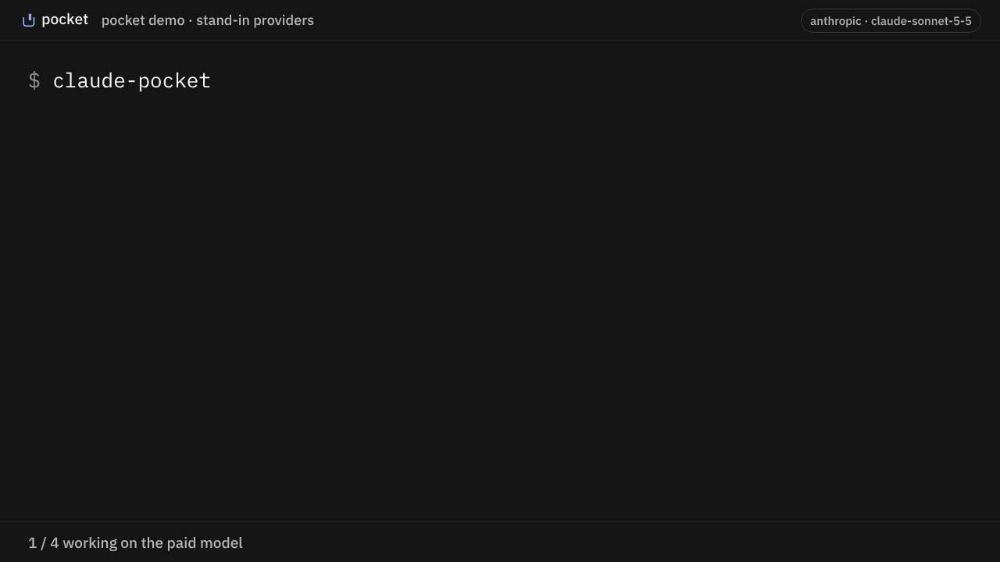
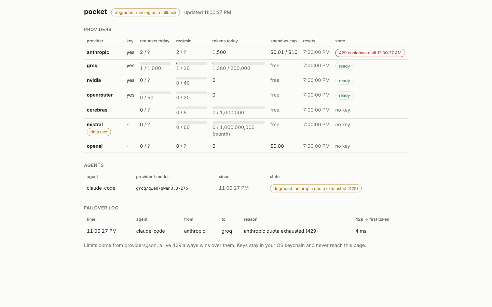

When your coding agent hits its usage limit, pocket moves it to your next key.
Your own keys, in your OS keychain. Runs on your machine. Every switch names the model now answering.
$ npm i -g @zerwone/pocket $ pocket setup $ claude-pocket
pocket is a free, open-source command-line tool that keeps Claude Code and Codex working when they hit a usage limit or rate limit (HTTP 429). It runs a small router on your own machine. When your current provider refuses a request for quota, it resends it to the next API key you configured (Groq, NVIDIA, OpenRouter, Cerebras, or your Anthropic or OpenAI key) and tells you which model is now answering.
How it works

pocket setup walks you through it, a couple of minutes if your keys are ready:
- finds Claude Code and Codex on your machine
- walks you through free keys from Groq, NVIDIA, OpenRouter and Cerebras, with the signup link for each (skip any you don't want)
- optionally adds your paid key, used first up to $10 a day
- connects your agents
Then use claude-pocket instead of claude (or codex-pocket instead of codex). Until a limit hits, nothing changes. When it does, the next reply starts with one line:
[pocket] running on groq/qwen/qwen3.8-27b, anthropic quota exhausted (429)
and the session carries on, as long as the fallback key has quota left. The fallback model may handle the task differently or worse, so review what it does. Free keys have limits too; when all of them are spent, the agent stops as it would without pocket.
Open pocket dash to see how much free quota is left on each key, what you've spent today, and every switch.

Install @zerwone/pocket. Do not run npx pocket: that name on npm belongs to someone else.
How much free you get
| Provider | Free per key | Get a key |
|---|---|---|
| Groq | 1,000 requests/day | console.groq.com/keys |
| NVIDIA | ~40 requests/min | build.nvidia.com |
| OpenRouter | 50 requests/day (1,000 after a one-time $10 top-up) | openrouter.ai/settings/keys |
| Cerebras | 1M tokens/day, 5 requests/min | cloud.cerebras.ai |
Checked against each provider's docs on 2026-11-08. Mistral (1B tokens/month) is supported but off by default, because its free plan may use your requests for training.
How it handles your keys
- Your keys only. Each provider only ever sees the key you gave it for that provider. Nothing is pooled or shared. Your requests go to the provider you configured.
- No pocket account, no telemetry. You still need an account with each provider.
- OS keychain, not pocket's config files. Windows Credential Manager, macOS Keychain, or Secret Service on Linux.
- Local only. Listens on
127.0.0.1and refuses anything without its local token.
Works with Claude Code (CLI and VS Code) and Codex CLI. Cursor partly: chat with your own key only, not Agent or Composer. Windows, macOS, Linux.
FAQ
What can I do when Claude Code says "usage limit reached"?
Four options: wait for the limit to reset; switch Claude Code to a paid Anthropic API key; route Claude Code through one gateway such as OpenRouter; or run it through pocket, which tries your own keys from several providers in order and switches automatically, mid-session, without restarting.
Does pocket work with a Claude Pro or Max subscription?
claude-pocket runs Claude Code on API keys through pocket, not on your subscription login. Keep using claude on your plan. When the plan hits its limit, start claude-pocket and keep working on your keys.
How is pocket different from OpenRouter, LiteLLM or claude-code-fallback?
OpenRouter is one provider and gateway; pocket can use an OpenRouter key as one step in its order. LiteLLM is a general proxy you configure yourself. claude-code-fallback moves you from a Claude subscription to Anthropic API billing only. pocket is narrower: one pocket setup, keys in your OS keychain, a quota meter per key, launchers for Claude Code and Codex, and a notice in the session each time it switches.
Which model answers after a switch?
The first one in your order with quota left. By default that is Groq (gpt-oss-120b, qwen3.8-27b or gpt-oss-20b, matched to what the agent asked for), then NVIDIA, OpenRouter and Cerebras. The reply names the provider and model.
Is it free? Is it allowed?
pocket is MIT-licensed. The free allowance comes from each provider's own free tier on your own account. pocket never pools or shares keys. Read each provider's terms; Mistral's free plan may train on your requests, so it is off by default.
Does my code leave my machine?
Your requests go to the provider you configured, the same as using that provider directly. pocket itself has no server, no account and no telemetry.
Does it work on Windows?
Yes, keys go to Windows Credential Manager and the launchers are .cmd files. The test suite has so far run on Linux; Windows reports are welcome.